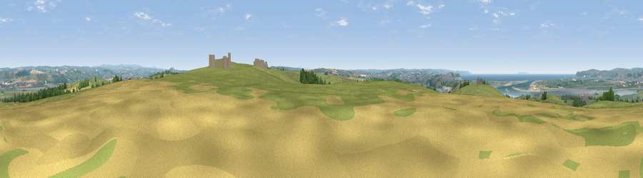

Viewpoint near Yelland
#3826 in England · top 12% of its area beats it · near YellandWhere it is
The exact computed spot (SS 49288 30575). Click the marker for map links.
The view, rendered

A 360° render of this exact spot computed from the terrain model, tree cover and land cover — summer colours, afternoon light, calibrated against photographs of famous viewpoints. Real trees, hedges and buildings will differ in detail.
The panorama
Grey silhouette: terrain skyline in each direction (720 bearings, Earth curvature and refraction included). Dashed green: skyline with trees (+15 m) and buildings (+8 m) as obstacles. Blue strip: how far the ground is visible on each bearing.
Where the view opens
Wedge length = distance to the farthest visible ground on that bearing (vegetation-aware). Rings at 10, 25 and 50 km.
What fills the view
59% grassland · 16% water · 9% woodland · 9% cropland · 5% built-up · 2% wetland ·
Angular shares of the visible panorama (visual magnitude), not map area. Landscape diversity 0.56 (0–1 Shannon).
Key numbers
More beautiful places nearby
The staircase of upgrades: each row has a higher view potential than everything closer. Driving times are estimates from straight-line distance, calibrated against real road routing — check an actual route before setting out.
| Place | Direction | Drive | Score |
|---|---|---|---|
| Viewpoint near Westward Ho! | WSW · 6 km | ~12 min | 75.3 |
| Viewpoint near Braunton | NNW · 7 km | ~15 min | 76.1 |
| Viewpoint near Westward Ho! | WSW · 8 km | ~16 min | 76.2 |
| Viewpoint near Saunton | NNW · 8 km | ~17 min | 76.6 |
| Codden Hill | E · 9 km | ~18 min | 81.3 |
| Viewpoint near Croyde | NNW · 9 km | ~18 min | 83.7 |
| Viewpoint near Woolacombe | NNW · 12 km | ~22 min | 84.7 |
| Viewpoint near Combe Martin | NNE · 20 km | ~33 min | 86.9 |
51.05469, -4.15178 · source: screening · position refined by local search. Computed location — check access rights before visiting.